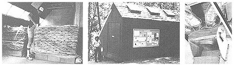

[1]J the end-sealed lumber is stacked on the piers, with air spaces between each piece; stickers separate the layers, and a polyethylene jacket is stapled around each stack to assure consistent air distribution without leakage. [2] Roof vents allow moisture-laden air to escape. [3] A 12"" fan, driven by one 35-watt photovoltaic panel, provides a 350-cubic-foot-per-minute airflows through the distribution plenum.